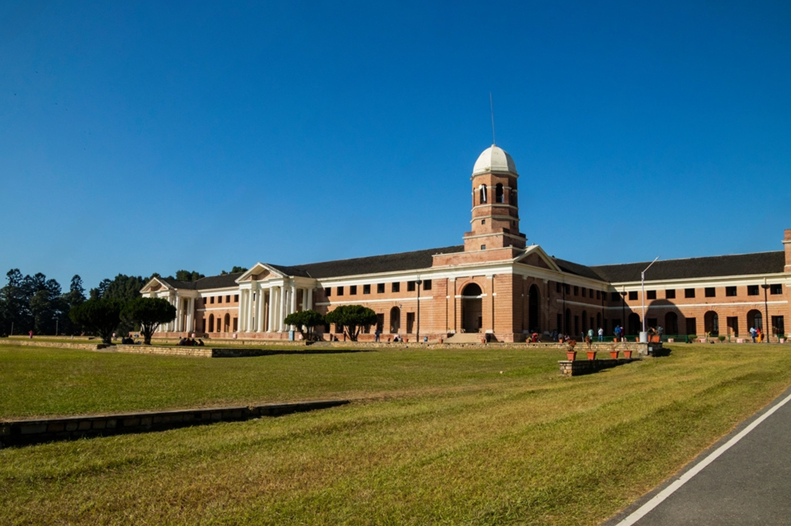

Dehradun is the capital city of Uttarakhand and is famous for its natural beauty, pleasant climate, and educational institutions.
The city lies in the Doon Valley, surrounded by the Himalayas and the Shivalik Hills.
Robber's Cave, Sahastradhara, Forest Research Institute, and Tapkeshwar Temple are among the most popular tourist attractions.
Dehradun became the capital of Uttarakhand in 2000.
Dehradun is located in Rajasthan.
It is actually located in Uttarakhand.The city has a rich history dating back to the 17th century.
Please help maintain cleanliness while visiting tourist places.
Visit: Uttarakhand Tourism